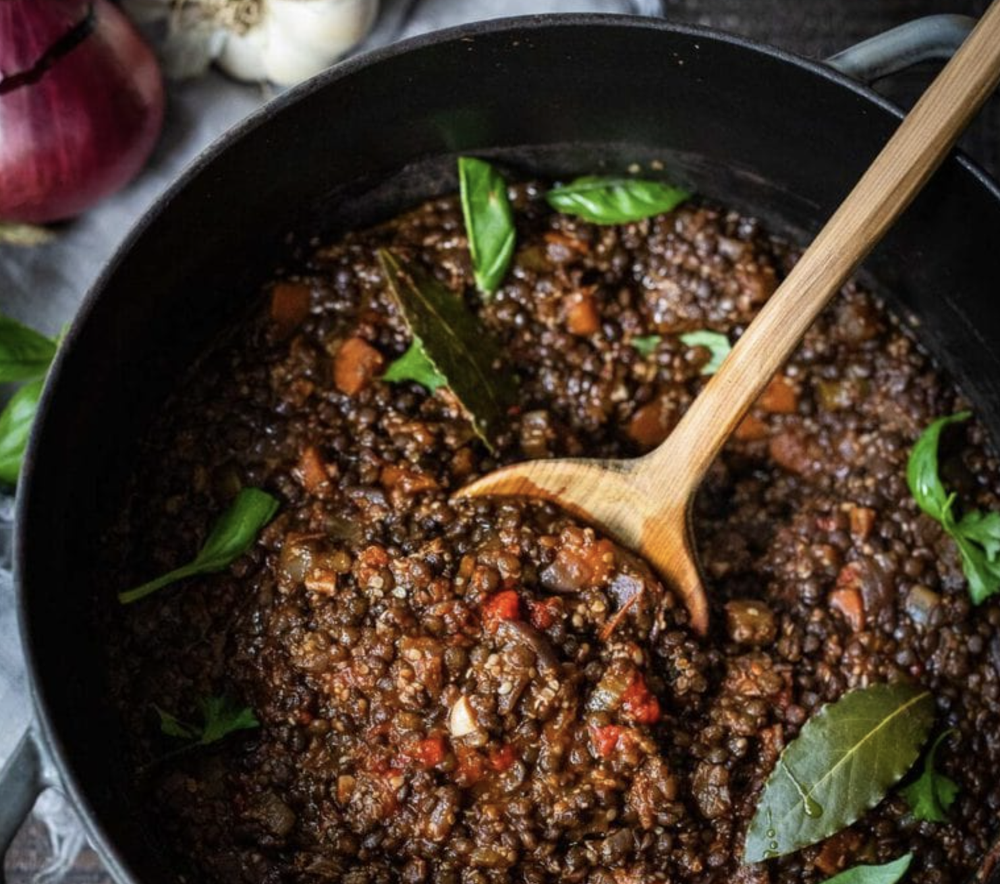

Looking for more? Check out our Mouthwatering Vegan Recipes and our 50 Best Vegetarian Recipes !

The last few nights have been chilly here. The air smells of leaves and pine, and woodsmoke from chimneys nearby. It’s getting darker sooner, I’ve got my wool socks on and all I want to eat right now is pasta. And bread! Cozy comfort food.
So this is how this recipe came to be. Brian and I were both craving something rich and “meaty” the other day, something that would hold up to a glass of red wine, all the while staying plant-based. And here it is- Lentil Bolognese!
We made a big pot of this vegan Bolognese and tossed it with pasta the first night, then served over polenta the second night. I can’t decide which way I liked it better. Both were so good!


Saute onion in olive oil until fragrant.
Add carrots, celery and garlic, continue cooking and stirring about 5 minutes. Add herbs and seasonings.
Add tomato paste, browning it a bit. Deglaze -add a generous splash of red wine and cook this off.
Add tomatoes and their juices.
> Add the lentils, hemp seeds or walnut nuts, and broth.
Toasted ground walnuts add really great flavor- but I like the ease of adding the hemp seeds– no grinding necessary!
Keep in mind the smaller the lentils the faster the bolognese will cook! These little black caviar lentils are the best- just 20 minutes of cooking time.
Bring to a boil and cover. Simmer for 20-30 minutes
Once the lentils are tender, remove the lid and cook off some of the liquid.
Taste and adjust seasonings, and stir in the balsamic vinegar.
Serve! Spoon this over creamy polenta, or toss it with your favorite pasta. Keep it vegan if you like or top with parmesan or pecorino cheese.
On the homefront: It’s been a beautiful week here. The leaves are turning, the sun is shining, the birds are singing. Nature doesn’t seem to take notice of what is in the news and all the worldy drama and happenings, it just keeps unfolding in its own time.
Mercury is in retrograde until mid-October, meaning it has the appearance of moving backward in the sky. During this time, some believe this backward motion can disrupt travel, communication and technology. Coincidence, perhaps, but compelling given the events of this week. üòâ
And while it is always good to have a healthy dose of cynicism I find this retrograde particularly interesting. How life often mirrors a bigger story. Are we not, after all, made of stars? Lately, on a personal level, I’ve noticed, “signs” directing me to be “patient and wait”, or hold my tongue, or delay a big decision, or to not force things.
When I take heed, things are easier…
I hope you are having a beautiful start to your week friends! Enjoy this recipe for Lentil Bolognese and please share how you serve it or adapt this!
xoxo
Sylvia